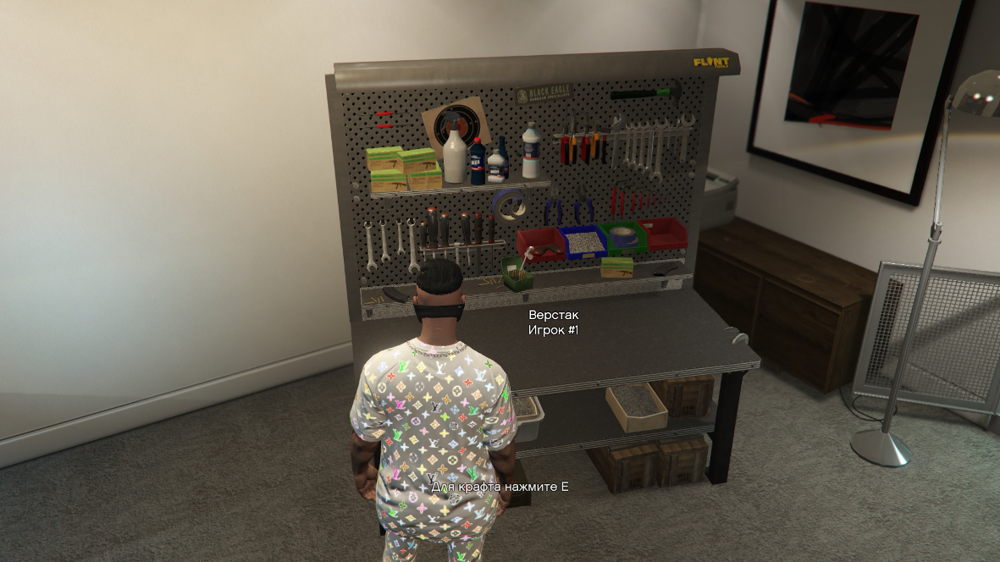
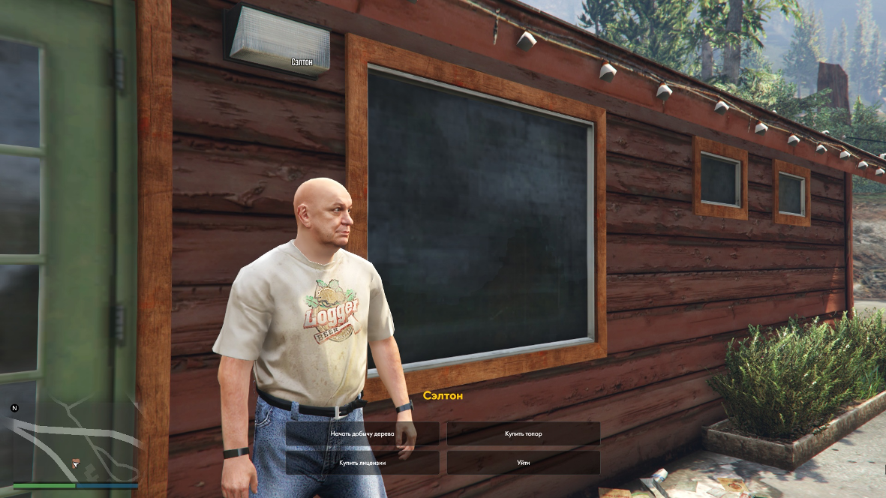
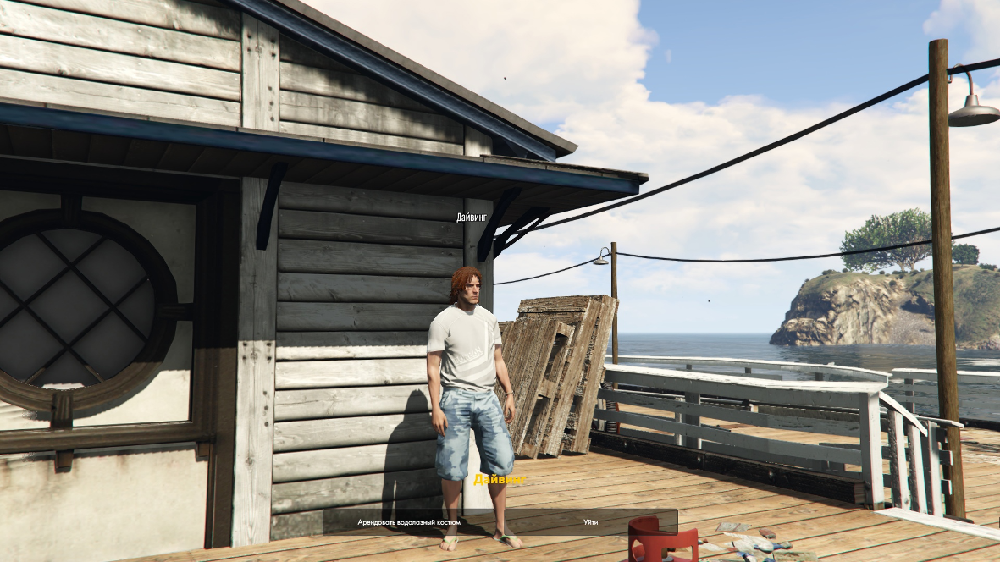

30.05 Güncelleme / İşçi Sistemi
30.05.2022
Bu güncellemede, az sonra daha ayrıntılı olarak anlatacağımız benzersiz işçilik sistemini tanıttık.
İşçilik için malzemeler
Malzemelerin çıkarılması için ürünler 24/7 mağazalarda ve görev karakterlerinden satın alınabilir. Odun kesmek için bir balta, cevher madenciliği için bir kazma (ilk balta ve kazmayı, görevin geçişi için NPC verecektir, kırıldıktan sonra ise yenilerini satın almanız gerekecektir.) Tellerin çıkarılması için tel kesiciler, işçiliğin bir bileşeni olan tutkal vb. Ayrıca kauçuk, plastik, boya ve değerli metalleri elde etmek için petrol çıkarmak gerekir. Tüm malzeme öğeleri aşınma ve yıpranma yapar.
Çizimleri elde etme ve işçişik öğeleri
Herhangi bir öğeyi oluşturmak için, belirli bir yerde NPC'den bir çizim satın almanız gerekir. Bazı çizimler bazı özel etkinliklerde, çöp kutularında veya çeşitli görevler için NPC'de mevcut olacaktır.
Aşağıda, Genel çizimlerin satın alınabileceği bir yer gösterilmektedir.

İstediğiniz çizime göre işçiliği yapmak için, 24/7 mağazasında bir tezgah satın almanız, onu (bilgisayarınızın faresinin sağ tık kullanımı ve klavyenizdeki E tuşu ile) tuş kombinasyonu yaparak koymanız gerekir.
{kind=link}
Ağaç işçiliği
NPC ile etkileşime girmek ve bir ağaç madenciliği baltası elde etmek için bir ödül olarak ilk görevi almak gerekir. Görevi tamamladıktan sonra, küçük bir miktar ödeyerek kaynakları yasal olarak çıkarmaya, veya para ödemeyerek yasadışı olarak başlayabilirsiniz. Fark nedir? Yasal madencilikte para harcıyorsunuz, ancak daha fazla kaynak çıkarıyorsunuz. Yasadışı madencilikte ise paranız kalıyor, ancak kaynaklar daha az çıkarılıyor. Ayrıca polisler NPC'de yasal olarak kimin çalıştığını öğrenebilirler. Ormandaki çalışılanların listeleri çıkarılıyor. Yasadışı oyuncular oyun içi yasalara göre cezalandırılabilir.
En yakın bölgede görev yaptıktan sonra, ağaçların yakınında işaretler görünür. Oyuncu işaretlere yaklaşır ve mini görevi tamamlayarak bir ağaç işçiliğine başlar.
{kind=link}
Cevher işçiliği
Eğer kazmanız varsa, ocağın yakınında NPC ile etkileşime girmeniz gerekir. Daha sonra cevher madenciliği için işaretler belirecektir. Bir işaret üzerinde durmanız ve çelik fabrikasında geri dönüşüm için kayalar veya cevherler çıkarmaya başlamanız gerekir.

Sahilde metal işçiliği
Sahilde NPC ile etkileşime girerek bir metal dedektörü kiralamanız gerek. (Metak dedektörünün pilleri 24/7 mağazadan satın alınmalıdır.) Daha sonra metalleri arayabileceksiniz. (Metal dedektörü, cevhere yaklaştığınızda karakteristik bir ses çıkaracaktır.)

Kablo işçiliği
24/7 mağazadan satın aldığınız tel kesiciler varsa, bir kablo çıkarma görevi verecek olan NPC ile etkileşime girmeniz gerek. Daha sonrasında devletin elektrik santrallerine gitmeniz gerekiyor. Bunlardan birine geldikten sonra, işaretin üzerinde durmanız ve rastgele bir kabloyu kesmeniz gerekir. Eğer doğru kabloyu keserseniz, 1 veya 2 kablolarını alırsınız. Eğer değilse, elektrik çarpacak ve 5 birim canınız gidecek.
Ayrıca, size 5 kablo verecek olan ”altın kablo” çıkarma şansınız da var.

Dalış
Dalış alanının yakınında NPC ile etkileşim kurmanız gerekir. Kiralık bir dalgıç kostümü almalısınız ve işçilikte lazım olacak malzemeleri aramak için işaretli alanda yüzmelisiniz. Su altında cam, metal, kauçuk bulabilirsiniz.
{kind=link}
Avcılık
NPC ile etkileşimde bulunduğunuzda, iki tür avlanma seçebilirsiniz. Birincisi, avcı lisans satın alıp yasal yollar ile avlanabileceksiniz. Ve daha sonra hayvan karkaslarını için kasaplara getirip, derilerinin paralarının karşılığını 1e1 alabileceksiniz. Lisansız illegal yoldan avlanır, karkasları ve derileri yeraltı kasaplarına götürürseniz, para karşılığı olarak yarı yarıya alabileceksiniz
Avcılık, işaretli bölgelerdeki (tavşan, geyik, yaban domuzu, çakal) hayvanları öldürerek gerçekleşir. Tavşanlar ve geyikler sizden kaçacak ve yaban domuzu ve çakallar size saldıracak.

Petrol çıkarma
Petrol toplama yerine gelmeniz ve NPC'lerle etkileşime girmeniz gereki. Daha sonra bir çalışma kıyafeti almalısınız ve petrol çıkarmak için işaretli kulelere yaklaşmalısınız. Her kulede en fazla 10 birim petrol çıkarabilirsiniz. Petrolü çıkardıktan sonra, ihtiyacınız olan malzeme miktarını rafineriye götürürsünüz ve ihtiyacınız olan malzeme için üretilen yağı değiştirirsiniz. Bunlar : (kauçuk, plastik, boya.)

Bize katıl! Herkese Five Live Role Play'de keyifli bir oyun diliyoruz.